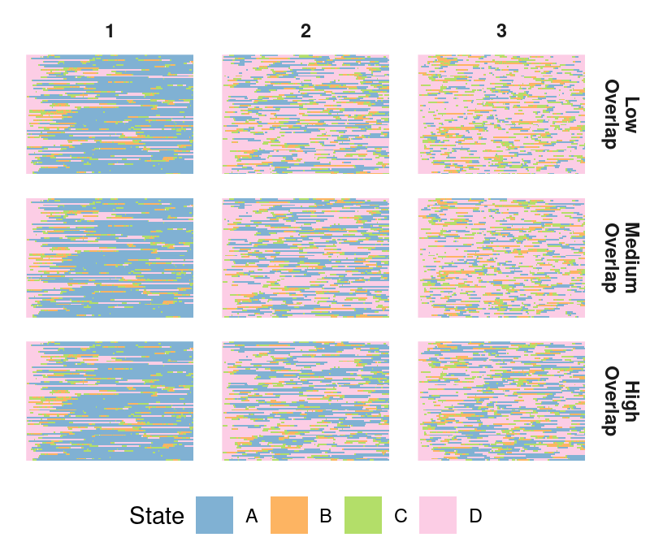
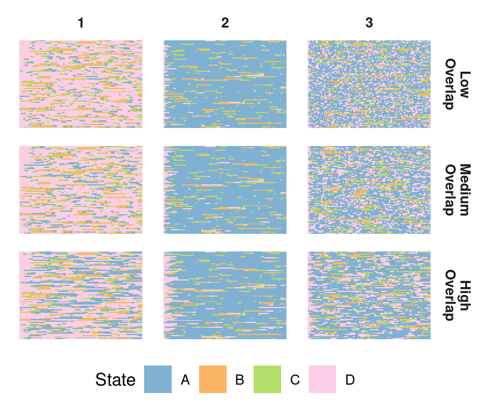
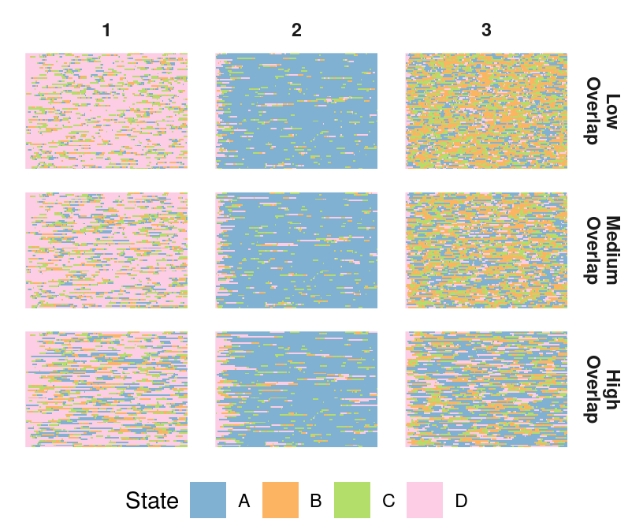
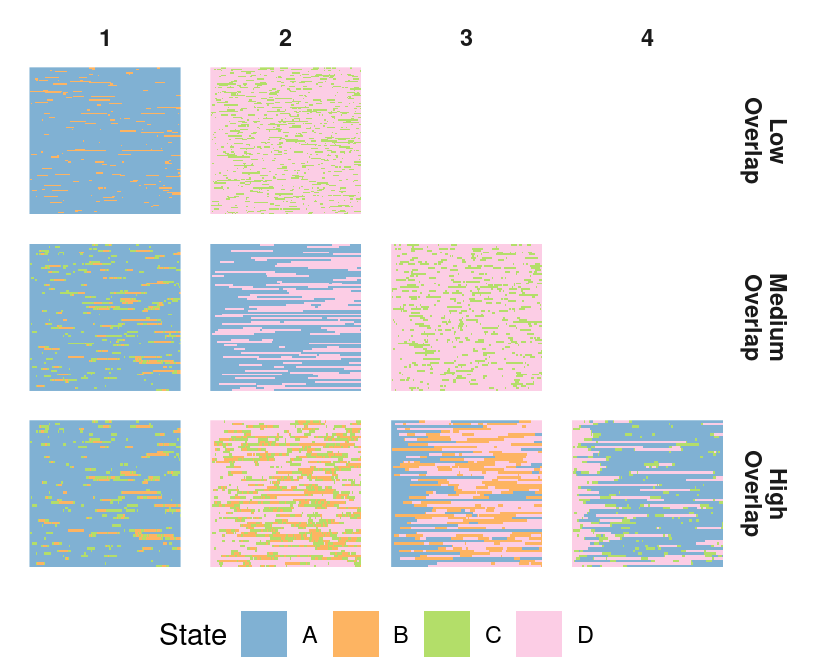
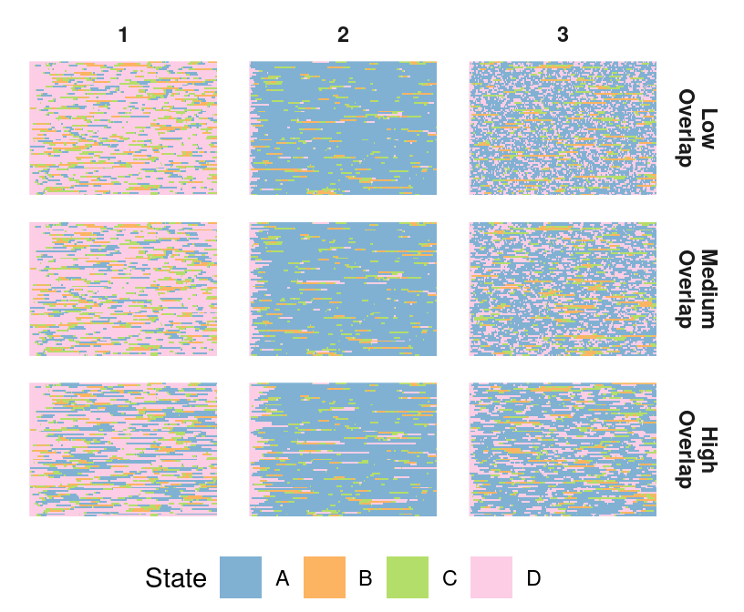
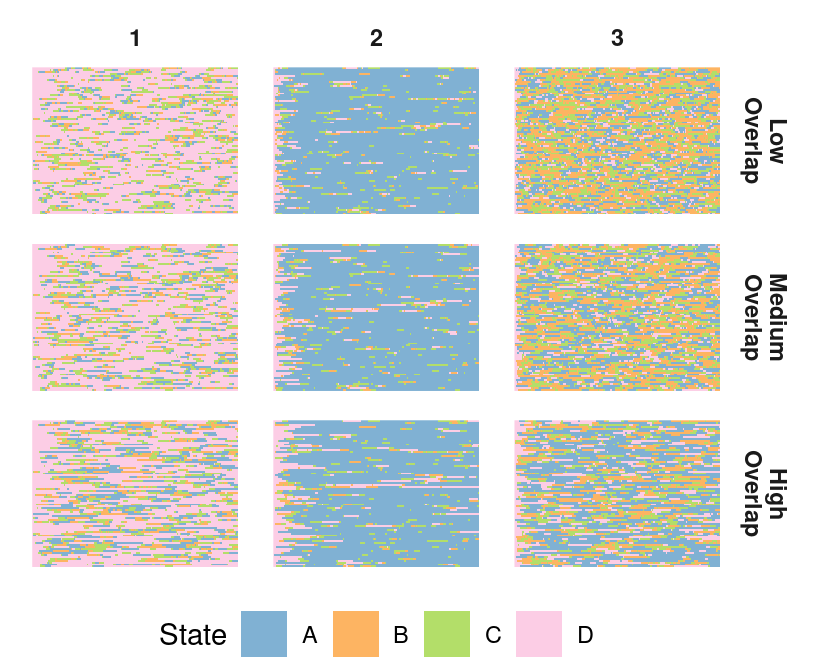
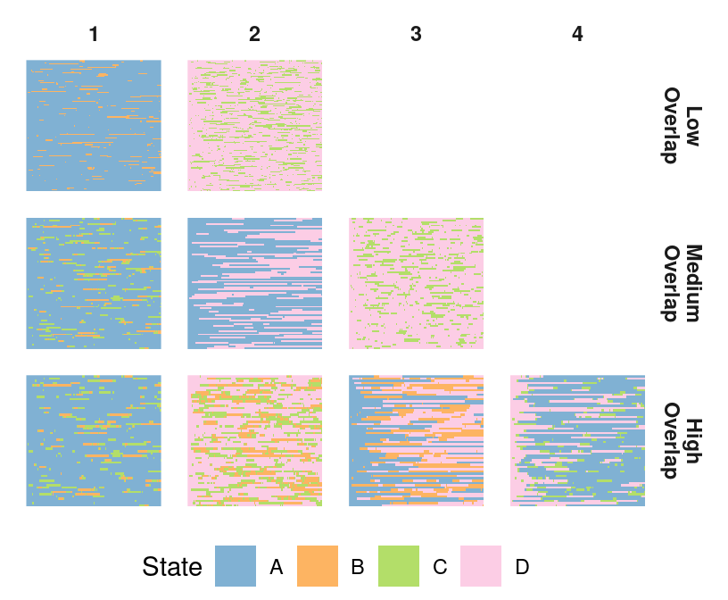
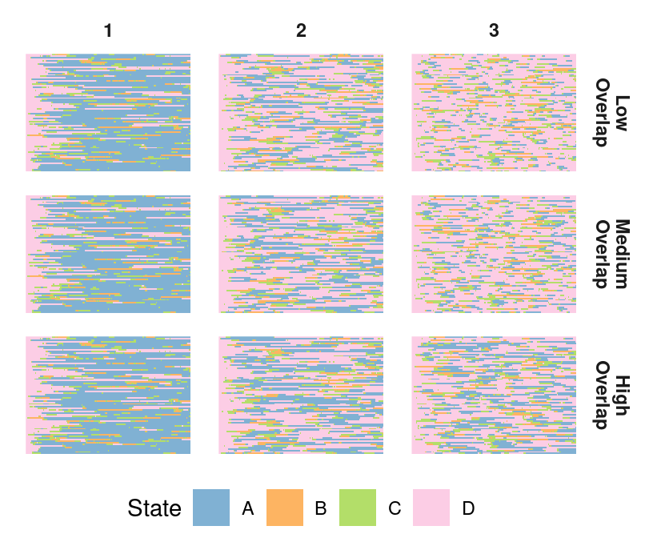
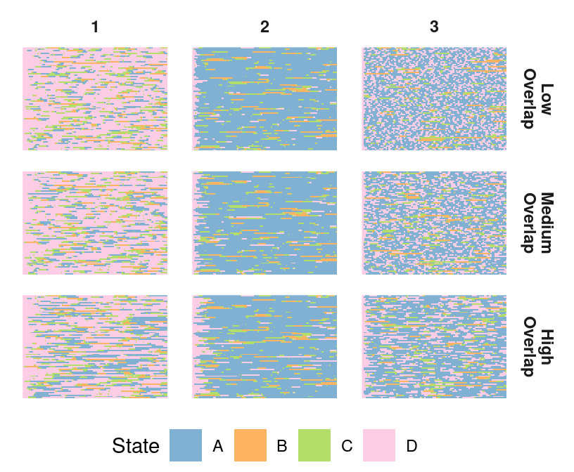
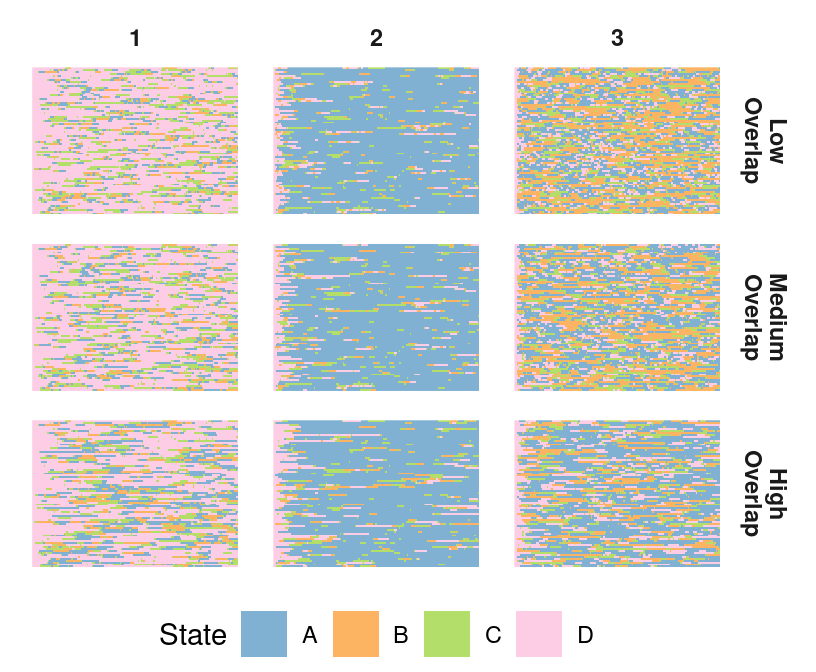

library(readr)
library(dplyr)
library(stringr)
library(tibble)
library(ggplot2)
library(tidyr)
source('src/plot_functions.R')
source('src/gen_seqs_funcs/sim_seq_functions.R')
source('src/gen_seqs_funcs/get_TPMs.R')Simulated Sequence Figures
Simulate Sequences
P_all1 <- get_sim_TPMs(1)
P_all2 <- get_sim_TPMs(2)
P_all5 <- get_sim_TPMs(5)
start_state_list <- list('state_low' = list(1, 4), 'state_med' = list(1, 1, 4), 'state_high' = list(1,4, 1, 4),
'dur1_low' = list(4,4,4), 'dur1_med' = list(4,4,4), 'dur1_high' = list(4,4,4),
'dur2_low' = list(4,4,4), 'dur2_med' = list(4,4,4), 'dur2_high' = list(4,4,4),
'dur3_low' = list(4,4,4), 'dur3_med' = list(4,4,4), 'dur3_high' = list(4,4,4))
clust_prob_list <- list('state_low' = c(0.5, 0.5), 'state_med' = c(1/3, 1/3, 1/3), 'state_high' = rep(0.25, 4),
'dur1_low' = c(1/3, 1/3, 1/3), 'dur1_med' = c(1/3, 1/3, 1/3), 'dur1_high' = c(1/3, 1/3, 1/3),
'dur2_low' = c(1/3, 1/3, 1/3), 'dur2_med' = c(1/3, 1/3, 1/3), 'dur2_high' = c(1/3, 1/3, 1/3),
'dur3_low' = c(1/3, 1/3, 1/3), 'dur3_med' = c(1/3, 1/3, 1/3), 'dur3_high' = c(1/3, 1/3, 1/3))
folders <- names(start_state_list)
#first order
for(f in folders){
dir.create(file.path(paste0('simulated_sequences/order_', 1), f))
k = 100
seq_data <- as.data.frame(t(sapply(seq(1 + 250*k,250 + 250*k), gen_clust_seq, P_list = P_all1[[f]], order = 1,num.iters = 500, start_state = start_state_list[[f]], clust_prob = clust_prob_list[[f]])))
write_csv(seq_data, paste0('simulated_sequences/order_', 1, '/', f, '/', k, '.csv'))
}
#second order
for(f in folders){
dir.create(file.path(paste0('simulated_sequences/order_', 2), f))
k = 100
seq_data <- as.data.frame(t(sapply(seq(1 + 250*k,250 + 250*k), gen_clust_seq, P_list = P_all2[[f]], order = 2,num.iters = 500, start_state = start_state_list[[f]], clust_prob = clust_prob_list[[f]])))
write_csv(seq_data, paste0('simulated_sequences/order_', 2, '/', f, '/', k, '.csv'))
}
#fifth order
for(f in folders){
dir.create(file.path(paste0('simulated_sequences/order_', 5), f))
k = 100
seq_data <- as.data.frame(t(sapply(seq(1 + 250*k,250 + 250*k), gen_clust_seq, P_list = P_all5[[f]], order = 5,num.iters = 500, start_state = start_state_list[[f]], clust_prob = clust_prob_list[[f]])))
write_csv(seq_data, paste0('simulated_sequences/order_', 5, '/', f, '/', k, '.csv'))
}Supplementary Figure 1
folders <- list.dirs('simulated_sequences/order_1')
folders <- str_remove(folders, 'simulated_sequences/order_1/')
folders <- folders[-1]
folders <- folders[c(11,12,10,2,3,1,5,6,4,8,9,7)]
overlap_names <- rep(c('Low', 'Medium', 'High'), 4)fig_list <- list()
for(k in seq(1:4)){
df_list <- lapply(seq(k*3 -2 , k*3), function(i){
df <- read_csv(paste0('simulated_sequences/order_1/', folders[i], '/100.csv'))
df <- df %>%
mutate('sim' = overlap_names[i]) %>%
rename(seq = seqs) %>%
mutate(uniq_id = seq(1, length(seq)))
})
lasg_list <- lapply(df_list, create_lasagna_df, states = c('A', 'B', 'C', 'D'))
lasg_df <- do.call(rbind, lasg_list)
fig <- plot_lasagna(lasg_df, states = c('A','B','C','D'))
fig_list[[k]] <- fig
#ggsave(paste0('figures/order_1/', k, '.jpeg'), fig, height = 3.5, width = 4.25)
}fig_list[[1]]fig_list[[2]]
fig_list[[3]]
fig_list[[4]]
Supplementary Figure 2
folders <- list.dirs('simulated_sequences/order_2')
folders <- str_remove(folders, 'simulated_sequences/order_2/')
folders <- folders[-1]
folders <- folders[c(11,12,10,2,3,1,5,6,4,8,9,7)]
overlap_names <- rep(c('Low', 'Medium', 'High'), 4)fig_list <- list()
for(k in seq(1:4)){
df_list <- lapply(seq(k*3 -2 , k*3), function(i){
df <- read_csv(paste0('simulated_sequences/order_2/', folders[i], '/100.csv'))
df <- df %>%
mutate('sim' = overlap_names[i]) %>%
rename(seq = seqs) %>%
mutate(uniq_id = seq(1, length(seq)))
})
lasg_list <- lapply(df_list, create_lasagna_df, states = c('A', 'B', 'C', 'D'))
lasg_df <- do.call(rbind, lasg_list)
fig <- plot_lasagna(lasg_df, states = c('A','B','C','D'))
fig_list[[k]] <- fig
#ggsave(paste0('figures/order_2/', k, '.jpeg'), fig, height = 3.5, width = 4.25)
}fig_list[[1]]
fig_list[[2]]fig_list[[3]]
fig_list[[4]]
Supplementary Figure 3
folders <- list.dirs('simulated_sequences/order_5')
folders <- str_remove(folders, 'simulated_sequences/order_5/')
folders <- folders[-1]
folders <- folders[c(11,12,10,2,3,1,5,6,4,8,9,7)]
overlap_names <- rep(c('Low', 'Medium', 'High'), 4)fig_list <- list()
for(k in seq(1:4)){
df_list <- lapply(seq(k*3 -2 , k*3), function(i){
df <- read_csv(paste0('simulated_sequences/order_5/', folders[i], '/100.csv'))
df <- df %>%
mutate('sim' = overlap_names[i]) %>%
rename(seq = seqs) %>%
mutate(uniq_id = seq(1, length(seq)))
})
lasg_list <- lapply(df_list, create_lasagna_df, states = c('A', 'B', 'C', 'D'))
lasg_df <- do.call(rbind, lasg_list)
fig <- plot_lasagna(lasg_df, states = c('A','B','C','D'))
fig_list[[k]] <- fig
#ggsave(paste0('figures/order_5/', k, '.jpeg'), fig, height = 3.5, width = 4.25)
}fig_list[[1]]
fig_list[[2]]
fig_list[[3]]
fig_list[[4]]